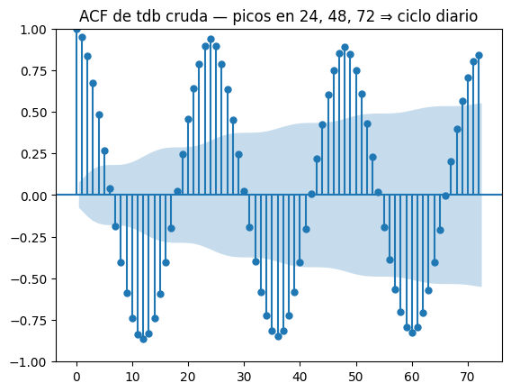
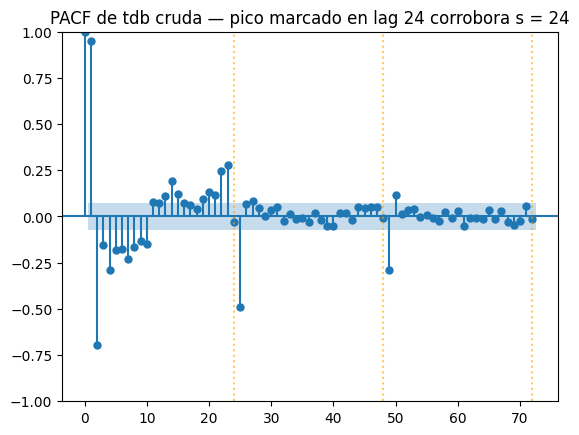
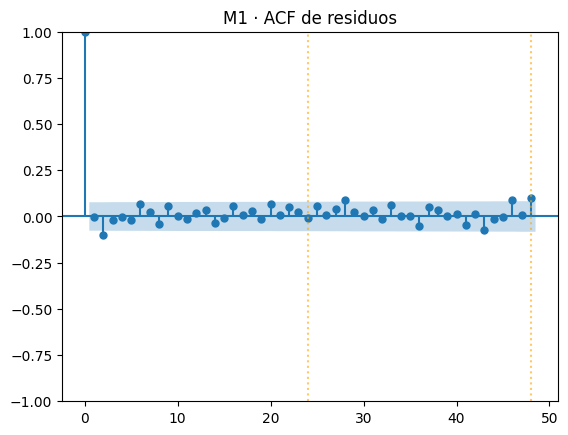
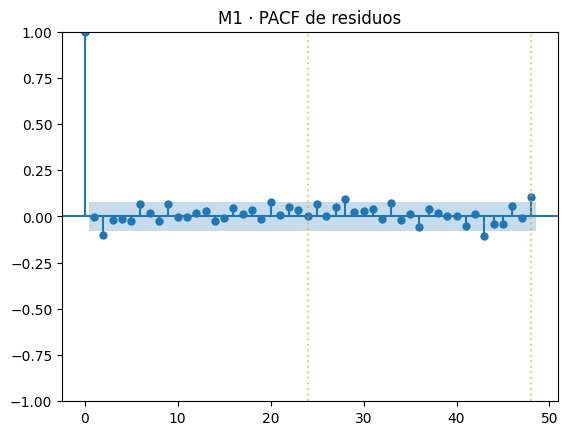

import marimo as mo
import numpy as np
import pandas as pd
import plotly.express as px
import plotly.graph_objects as go
from plotly.subplots import make_subplots
from statsmodels.tsa.statespace.sarimax import SARIMAX
from statsmodels.tsa.stattools import acf, pacf, adfuller, kpss
from statsmodels.graphics.tsaplots import plot_acf, plot_pacf
from statsmodels.stats.diagnostic import acorr_ljungbox
from scipy import stats
from scipy.signal import periodogram
import warnings
warnings.filterwarnings("ignore")20 020 · Configurar SARIMA desde el código — tdb
En esta libreta vamos a ajustar SARIMA a la temperatura de bulbo seco (tdb) del ClimaLab y a aprender cómo elegir e iterar sus siete parámetros (p, d, q)(P, D, Q, s).
Sin widgets. Cada iteración es una celda concreta que editas y vuelves a ejecutar. La idea es ver en código qué pasa al mover cada perilla, y aprender a leer los diagnósticos (residuos, ACF/PACF de residuos, Ljung-Box, AIC/BIC, RMSE) para decidir el siguiente cambio.
Constantes fijas — para que solo varíen los parámetros SARIMA:
| Pieza | Valor |
|---|---|
| Serie | tdb resampleada a 1 hora |
| Entrenamiento | 2024-03-15 00:00 → 2024-04-11 23:00 (672 obs = 4 semanas) |
| Holdout | 2024-04-12 00:00 → 2024-04-12 23:00 (24 obs = 24 h) |
| Estacionalidad | s = 24 |
| Horizonte de pronóstico | h = 24 |
| Métrica principal | RMSE en el holdout |
El plan.
- Cargar y mirar la ventana fija.
- Recordar qué controla cada parámetro SARIMA.
- Deducir los parámetros iniciales mirando la serie (ADF/KPSS para
(d, D), ACF/PACF para(p, q, P, Q)). - Ajustar modelo 1 M1, leer su
summaryy sus diagnósticos. - Aprender el recetario de iteración.
- Iterar a M2 y M3, justificando cada cambio.
- Compararlos en una tabla y decidir uno.
20.0.1 ¿Por qué cada paquete?
Vamos a cargar más imports que de costumbre porque SARIMA toca varias capas a la vez (datos, modelo, diagnóstico estadístico, gráficas). Vale la pena nombrar qué hace cada uno antes de tenerlos todos juntos:
| Import | Para qué lo necesitamos |
|---|---|
SARIMAX (de statsmodels.tsa.statespace) |
el modelo en sí. Es la implementación más completa de SARIMA en Python — soporta (p, d, q)(P, D, Q, s), da intervalos de confianza y residuos, y la pondremos a hacer forecast(24). |
acf (autocorrelation function) |
calcula la correlación entre la serie y sus rezagos. Sus picos sugieren q (lags pequeños) y Q (lags s, 2s). |
pacf (partial autocorrelation function) |
igual que acf pero “quitando” la influencia de los rezagos intermedios. Sus picos sugieren p y P. ACF y PACF se leen juntas. |
adfuller (Augmented Dickey-Fuller) |
prueba de estacionariedad con \(H_0\) = “hay raíz unitaria”. Si \(p < 0.05\) → estacionaria. La usamos sobre y, Δy, Δ₂₄y para decidir (d, D). |
kpss (Kwiatkowski-Phillips-Schmidt-Shin) |
la prueba complementaria de ADF: \(H_0\) = “estacionaria”. Si \(p > 0.05\) → estacionaria. Usamos las dos a la vez porque sus hipótesis nulas son opuestas y juntas dan un veredicto sólido. |
acorr_ljungbox |
la prueba de Ljung-Box sobre los residuos del fit. \(H_0\) = “los residuos hasta el lag L son ruido blanco”. Es nuestro semáforo de “ya no queda estructura por modelar”. |
scipy.stats |
de aquí solo usamos stats.probplot para el QQ-plot del diagnóstico (residuos estandarizados vs Normal). |
20.1 1 · Cargar la serie y fijar la ventana
Una sola lectura del parquet, un solo resample horario, un solo recorte con fechas codificadas. A partir de aquí train y test no cambian.
f = "data/ClimaLab_2023-05-31_2025-06-20.parquet"
tdb_h = (
pd.read_parquet(f, columns=["tdb"])["tdb"]
.resample("h").mean().dropna()
)
# Tres fechas que definen dos intervalos contiguos:
# train = [f1, f2) ← 4 semanas
# test = [f2, f3) ← 24 h
f1 = pd.Timestamp("2024-03-15 00:00")
f2 = f1 + pd.Timedelta(weeks=4)
f3 = f2 + pd.Timedelta(hours=24)
train = tdb_h[(tdb_h.index >= f1) & (tdb_h.index < f2)].asfreq("h")
test = tdb_h[(tdb_h.index >= f2) & (tdb_h.index < f3)].asfreq("h")
print(f"train: {len(train)} obs · {train.index.min()} → {train.index.max()}")
print(f" media={train.mean():.2f} °C · std={train.std():.2f} °C "
f"· min={train.min():.2f} · max={train.max():.2f}")
print(f"test : {len(test)} obs · {test.index.min()} → {test.index.max()}")
print(f" media={test.mean():.2f} °C · std={test.std():.2f} °C")train: 672 obs · 2024-03-15 00:00:00 → 2024-04-11 23:00:00
media=27.28 °C · std=4.83 °C · min=16.66 · max=36.11
test : 24 obs · 2024-04-12 00:00:00 → 2024-04-12 23:00:00
media=27.13 °C · std=4.52 °Cventana = pd.concat([
train.to_frame("tdb").assign(split="train"),
test.to_frame("tdb").assign(split="holdout (24 h)"),
])
fig_ventana = px.line(
ventana, y="tdb", color="split",
title="tdb — ventana de trabajo fija (train + holdout 24 h)",
labels={"tdb": "tdb (°C)", "date": "fecha"},
)
fig_ventana,ventanaUnable to display output for mime type(s): application/json20.2 2 · Qué controla cada parámetro de SARIMA
Un SARIMA tiene la forma (p, d, q)(P, D, Q, s). Siete números. La primera tripleta opera paso a paso; la segunda opera en saltos de s (un día = 24 h, en nuestro caso).
| Símbolo | Qué controla | “Imagen” en tdb horario |
|---|---|---|
p |
AR de corto plazo — usa \(y_{t-1}, \dots, y_{t-p}\) | la temperatura de hace 1–2 h predice la actual |
d |
nº de diferencias regulares — quita tendencia (la media que sube o baja a largo plazo sin volver: calentamiento, deriva del sensor, cambio de nivel permanente). No se usa para ciclos que se repiten. | rara en tdb; arrancamos con d = 0 |
q |
MA de corto plazo — usa errores recientes | el error de hace 1 h arrastra |
P |
AR estacional — usa \(y_{t-s}, y_{t-2s}, \dots\) | “ayer a esta misma hora” |
D |
diferencia estacional — calcula \(y_t - y_{t-s}\) | trabaja con la diferencia respecto a ayer |
Q |
MA estacional — usa errores en lags s, 2s, … |
la sorpresa de ayer a esta hora arrastra |
s |
longitud del ciclo | s = 24 para datos horarios con ciclo diario |
Regla práctica. Mantén
d + D ≤ 2. Diferenciar de más amplifica el ruido. Para series con ciclo diario fuerte y sin tendencia anual marcada,d = 0, D = 1suele ser el punto de partida correcto.
Los siete parámetros se eligen mirando la serie (siguiente sección) y se afinan mirando los residuos de un fit inicial.
20.3 3 · Deducir los parámetros iniciales mirando la serie
Vamos a ir por capas, de la mirada más cualitativa a la más cuantitativa:
- Perfil diario (boxplot) → confirma visualmente que hay un ciclo de 24 h.
- ACF sobre la serie cruda → debería mostrar picos repetidos en lags 24, 48, 72…
- PACF sobre la serie cruda → corrobora con un pico aislado en lag 24.
- Periodograma (FFT) → identifica el periodo dominante de forma cuantitativa, sin saberlo de antemano.
- ADF y KPSS sobre la serie y sus diferencias → decide
(d, D). - ACF y PACF sobre la serie ya diferenciada → propone
(p, q, P, Q).
Las cuatro primeras pruebas atacan la misma pregunta — ¿cuál es s? — desde cuatro ángulos distintos. Si las cuatro coinciden, el valor de s queda fuera de duda.
20.3.1 3.1 · Perfil diario — ¿existe el ciclo de 24 h?
Si para cada hora del día (0–23) las temperaturas se concentran en un rango distinto, hay un ciclo de 24 h y s = 24 es la elección correcta.
_hours = train.index.hour
_fig = go.Figure()
for _h in range(24):
_v = train[_hours == _h]
_fig.add_trace(go.Box(
y=_v, name=f"{_h:02d}", boxpoints=False,
marker_color="#2b6cb0", line=dict(width=1), showlegend=False,
))
_fig.update_layout(
title="Perfil diario en el train — distribución de tdb por hora del día",
xaxis_title="hora del día", yaxis_title="tdb (°C)",
height=320, margin=dict(l=40, r=20, t=50, b=40),
template="plotly_white",
)
_figLectura. Las cajas se separan claramente: las horas centradas en el mediodía solar están muy por encima de las nocturnas. El ciclo diario es real y dominante → s = 24.
20.3.2 3.2 · ACF de la serie cruda — ¿se repite el patrón?
Una señal con periodo s produce una ACF también periódica con el mismo periodo. Si la temperatura a las 14:00 de hoy se parece a la de las 14:00 de ayer, esperamos correlación alta en lag 24, y de nuevo en 48, 72…
Las líneas naranjas punteadas marcan esos lags candidatos.
fig_acf_crudo = plot_acf(
train.values, lags=72,
title="ACF de tdb cruda — picos en 24, 48, 72 ⇒ ciclo diario",
)
fig_acf_crudo
Lectura. Picos grandes y positivos en lags 24, 48, 72 (líneas naranjas) — la firma inequívoca de un ciclo de 24 h. Entre medias, aparecen mínimos negativos en lags ≈12, 36, 60 — porque la temperatura a las 02:00 está anti-correlacionada con la de las 14:00. El decaimiento muy lento de los picos confirma que es estacionalidad, no memoria AR corta.
20.3.3 3.3 · PACF de la serie cruda — apoyo
La PACF mide la correlación parcial, quitando el efecto de los lags intermedios. Para un ciclo puro suele aparecer un pico aislado en lag s sin necesidad de picos en 2s, 3s… (eso ya queda “explicado” por el primero).
fig_pacf_crudo = plot_pacf(
train.values, lags=72, method="ywm",
title="PACF de tdb cruda — pico marcado en lag 24 corrobora s = 24",
)
for _k in (24, 48, 72):
fig_pacf_crudo.axes[0].axvline(_k, color="orange", linestyle=":", alpha=0.6)
fig_pacf_crudo
Lectura. Picos fuertes en los primeros lags (1–2, dinámica de corto plazo) y un pico extra alrededor del lag 24. Los lags 48 y 72 no necesitan ser grandes — la PACF ya descontó esa información. Veredicto: el ciclo de 24 h también aparece aquí.
20.3.4 3.4 · Periodograma (FFT) — confirmación cuantitativa
Hasta aquí hemos visto el ciclo cualitativamente. La transformada de Fourier discreta lo descubre sin que le digamos el periodo de antemano: descompone la serie en sinusoides y nos dice cuánta energía hay en cada frecuencia. Un ciclo de 24 h aparecerá como un pico nítido en la frecuencia \(f = 1/24 \approx 0.0417\) ciclos/hora.
Mostramos la potencia espectral vs. periodo (más intuitivo que frecuencia): el eje x está en horas, y el pico marca el periodo dominante.
# fs = 1 muestra/hora → frecuencias en ciclos/hora, periodos en horas
_freqs, _potencia = periodogram(train.values, fs=1.0)
# saltamos la componente DC (f = 0) y convertimos a periodo
_periodos_h = 1 / _freqs[1:]
_potencia_no_dc = _potencia[1:]
_periodo_dominante = _periodos_h[_potencia_no_dc.argmax()]
fig_fft = px.line(
x=_periodos_h, y=_potencia_no_dc, log_x=False, log_y=False,
labels={"x": "periodo (horas)",
"y": "potencia espectral"},
title=(
f"Periodograma — pico dominante en {_periodo_dominante:.1f} h"
" ⇒ confirma s = 24"
),
)
fig_fft.add_vline(x=24, line_dash="dot", line_color="orange",
annotation_text="24 h")
print(f"Periodo dominante detectado por FFT: {_periodo_dominante:.2f} h")
fig_fftPeriodo dominante detectado por FFT: 24.00 hLectura. El pico más alto del periodograma está exactamente en 24 horas — la FFT descubre el ciclo sin que le hayamos dado pista alguna. Hay picos secundarios en 12 h y 8 h (armónicos del ciclo diario, naturales en una señal no perfectamente sinusoidal).
Veredicto combinado. Las cuatro pruebas (boxplot, ACF, PACF, FFT) coinciden: el ciclo dominante es de 24 h. Fijamos \(s = 24\) con total confianza y pasamos a decidir cuántas diferencias necesitamos.
20.3.5 3.5 · ADF y KPSS — ¿qué (d, D) deja la serie estacionaria?
SARIMA exige una serie estacionaria después de aplicar d diferencias regulares y D diferencias estacionales. Probamos cuatro transformaciones y, en cada una, corremos dos pruebas con hipótesis nulas opuestas:
| Prueba | \(H_0\) | Conclusión cuando rechazamos \(H_0\) |
|---|---|---|
| ADF | “hay raíz unitaria” | la serie es estacionaria ✓ |
| KPSS | “la serie es estacionaria” | la serie no es estacionaria ✗ |
Buscamos: ADF p < 0.05 y KPSS p > 0.05 simultáneamente, con la menor cantidad posible de diferencias.
def _stat_row(name, s, *, d, D):
x = s.dropna()
adf_stat, adf_p, *_ = adfuller(x, autolag="AIC")
kpss_stat, kpss_p, *_ = kpss(x, regression="c", nlags="auto")
return {
"d": d, "D": D, "transformación": name, "n": len(x),
"ADF stat": round(adf_stat, 3), "ADF p": round(adf_p, 4),
"ADF": "estacionaria" if adf_p < 0.05 else "NO estac.",
"KPSS stat": round(kpss_stat, 3), "KPSS p": round(kpss_p, 4),
"KPSS": "estacionaria" if kpss_p > 0.05 else "NO estac.",
}
stationarity = pd.DataFrame([
_stat_row("y", train, d=0, D=0),
_stat_row("Δy", train.diff(), d=1, D=0),
_stat_row("Δ₂₄ y", train.diff(24), d=0, D=1),
_stat_row("Δ Δ₂₄ y", train.diff().diff(24), d=1, D=1),
])
stationarity| d | D | transformación | n | ADF stat | ADF p | ADF | KPSS stat | KPSS p | KPSS | |
|---|---|---|---|---|---|---|---|---|---|---|
| 0 | 0 | 0 | y | 672 | -2.456 | 0.1266 | NO estac. | 0.105 | 0.1 | estacionaria |
| 1 | 1 | 0 | Δy | 671 | -18.060 | 0.0000 | estacionaria | 0.008 | 0.1 | estacionaria |
| 2 | 0 | 1 | Δ₂₄ y | 648 | -7.945 | 0.0000 | estacionaria | 0.077 | 0.1 | estacionaria |
| 3 | 1 | 1 | Δ Δ₂₄ y | 647 | -12.011 | 0.0000 | estacionaria | 0.032 | 0.1 | estacionaria |
Lectura.
ysin diferenciar: ADF apenas rechaza (p ≈ 0.05) y KPSS la considera no estacionaria. El ciclo diario hace que la media local varíe entre noche y día.Δ₂₄ y(sola diferencia estacional) ya pasa las dos pruebas: ADF bajo, KPSS alto. Es la elección mínima que estaciona la serie.ΔyyΔ Δ₂₄ ytambién pasan, pero ya estaríamos diferenciando de más: cualquier ruido se amplifica al diferenciar.
Decisión:
d = 0,D = 1,s = 24.
20.3.6 3.6 · ACF y PACF de la serie diferenciada — (p, q, P, Q)
Ya decidimos d = 0, D = 1, s = 24. Ahora, sobre la serie ya estacionaria, leemos la ACF y la PACF para proponer los órdenes que faltan (p, q, P, Q). La celda de abajo dibuja esas dos funciones a mano (con barras) en vez de usar plot_acf/plot_pacf, solo para tener control total del estilo; el cálculo es el mismo.
Por qué sobre Δ₂₄ y y no sobre la serie cruda. SARIMA modela lo que queda después de diferenciar. Por eso primero aplicamos la diferencia estacional —Δ₂₄y_t = y_t − y_{t−24}, cada hora menos la misma hora de ayer— y recién sobre ese residuo medimos la autocorrelación. (Los primeros 24 valores quedan en NaN porque no tienen “ayer”; se descartan.)
La regla de lectura — ACF y PACF se leen siempre juntas:
| Función | Mide | Sus picos sugieren |
|---|---|---|
| ACF (autocorrelación) | correlación bruta con el rezago k |
MA: lags 1, 2, … → q; lags s, 2s → Q |
| PACF (parcial) | correlación con el rezago k descontando los intermedios |
AR: lags 1, 2, … → p; lags s, 2s → P |
Mnemotecnia: ACF → MA (q, Q), PACF → AR (p, P).
Por qué la banda ±1.96/√n. Las líneas grises punteadas marcan la banda de significancia del 95% bajo la hipótesis de ruido blanco. El argumento: si la serie diferenciada fuera ruido blanco puro, sus autocorrelaciones muestrales \(\hat r_k\) no serían exactamente 0 por azar, sino que se distribuirían aprox. \(\hat r_k \sim \mathcal{N}(0,\, 1/n)\) (resultado de Bartlett). Su desviación estándar es \(1/\sqrt{n}\), y el intervalo del 95% de una normal es \(\pm 1.96\,\sigma = \pm 1.96/\sqrt{n}\). Con \(n \approx 648\) sale \(\approx \pm 0.077\).
Cómo se lee: una barra dentro de la banda gris es indistinguible de cero (ruido, no la modelamos); una barra que sobresale es un pico estadísticamente significativo → ese lag aporta estructura y hay que capturarlo con el parámetro correspondiente. Es el criterio objetivo que reemplaza el “se ve grande a ojo”.
Calculamos hasta el lag 48 = 2 ciclos diarios a propósito: para juzgar lo estacional hace falta ver tanto s = 24 como 2s = 48 (las líneas naranjas). Si solo llegáramos a 24 no podríamos distinguir entre “basta con Q = 1” y “hace falta más memoria estacional”.
_diff = train.diff(24).dropna()
_nlags = 48
_ci = 1.96 / np.sqrt(len(_diff))
_acf_vals = acf(_diff.values, nlags=_nlags, fft=True)
_pacf_vals = pacf(_diff.values, nlags=_nlags, method="ywm")
fig_acf = make_subplots(
rows=1, cols=2,
subplot_titles=("ACF de Δ₂₄ y", "PACF de Δ₂₄ y"),
)
for _col, (_v, _nm) in enumerate(
[(_acf_vals, "ACF"), (_pacf_vals, "PACF")], start=1
):
fig_acf.add_trace(
go.Bar(
x=list(range(len(_v))), y=_v, marker_color="#2b6cb0",
hovertemplate="lag=%{x}<br>r=%{y:.3f}<extra></extra>",
showlegend=False,
),
row=1, col=_col,
)
fig_acf.add_hline(y=_ci, line=dict(dash="dash", color="grey"), row=1, col=_col)
fig_acf.add_hline(y=-_ci, line=dict(dash="dash", color="grey"), row=1, col=_col)
for _k in (24, 48):
fig_acf.add_vline(x=_k, line=dict(color="orange", width=1, dash="dot"),
row=1, col=_col)
fig_acf.update_layout(
height=340, template="plotly_white",
margin=dict(l=40, r=20, t=50, b=40),
)
fig_acf.update_xaxes(title_text="lag (horas)")
fig_acfLectura de los picos.
- Lags pequeños (1, 2) — ACF y PACF tienen un pico en el lag 1 y decaen rápido. Eso es señal de
p = 1y/oq = 1. - Lag 24 (línea naranja) — la ACF tiene un pico negativo grande; la PACF también muestra estructura ahí. Es la firma típica de
Q = 1combinada con la diferencia estacionalD = 1. - Lag 48 — un pico residual mucho menor que el de 24, sugiere que con
P = 1oQ = 1ya capturamos casi todo lo estacional.
Propuesta de modelo inicial — M1: \[\text{SARIMA}(1, 0, 1)(1, 1, 1)_{24}\] Es la receta “todo a 1” en ambas escalas: AR y MA simples en lo regular, AR y MA simples en lo estacional, con una diferencia estacional. Es el mejor punto de partida y desde aquí iteramos.
20.4 4 · Ajustar M1 paso a paso — sin helpers
Antes de empaquetar nada en funciones, hacemos un solo modelo a mano, paso a paso, para que se vea cada operación con claridad. Las funciones de la siguiente sección (§5) serán exactamente esto, empacado.
El modelo es el que dedujimos en §3: \[\text{SARIMA}(1, 0, 1)(1, 1, 1)_{24}.\]
20.4.1 4.1 · Ajustar el modelo
SARIMAX toma la serie de entrenamiento y los dos órdenes — el regular (p, d, q) y el estacional (P, D, Q, s). Las opciones enforce_*=True exigen que el modelo final sea estacionario e invertible (parámetros dentro del círculo unidad).
res_M1 = SARIMAX(
train,
order=(1, 0, 1),
seasonal_order=(1, 1, 1, 24),
enforce_stationarity=True,
enforce_invertibility=True,
).fit(disp=False)
print(res_M1.summary()) SARIMAX Results
==========================================================================================
Dep. Variable: tdb No. Observations: 672
Model: SARIMAX(1, 0, 1)x(1, 1, 1, 24) Log Likelihood -533.483
Date: Wed, 27 May 2026 AIC 1076.965
Time: 11:49:59 BIC 1099.334
Sample: 03-15-2024 HQIC 1085.643
- 04-11-2024
Covariance Type: opg
==============================================================================
coef std err z P>|z| [0.025 0.975]
------------------------------------------------------------------------------
ar.L1 0.8967 0.019 47.925 0.000 0.860 0.933
ma.L1 0.0147 0.040 0.370 0.712 -0.063 0.092
ar.S.L24 0.0057 0.042 0.136 0.892 -0.076 0.088
ma.S.L24 -0.8353 0.028 -29.896 0.000 -0.890 -0.781
sigma2 0.2901 0.013 23.161 0.000 0.266 0.315
===================================================================================
Ljung-Box (L1) (Q): 0.00 Jarque-Bera (JB): 70.64
Prob(Q): 0.98 Prob(JB): 0.00
Heteroskedasticity (H): 0.84 Skew: -0.42
Prob(H) (two-sided): 0.19 Kurtosis: 4.38
===================================================================================
Warnings:
[1] Covariance matrix calculated using the outer product of gradients (complex-step).Cómo leer el summary.
- Bloque “SARIMAX Results” — tamaño de muestra, log-likelihood, AIC, BIC.
- Tabla de coeficientes — uno por término del modelo:
ar.L1,ma.L1→ coeficientes regulares (\(\phi_1\), \(\theta_1\)).ar.S.L24,ma.S.L24→ coeficientes estacionales (\(\Phi_1\), \(\Theta_1\)).sigma2→ varianza estimada del ruido \(\varepsilon\).- Columna
P>|z|→ p-valor del coeficiente. Si es < 0.05 el término aporta; si es > 0.1 es candidato a quitarlo.
- Bloque “Ljung-Box (L1) (Q)” y “Jarque-Bera” — el primero mide autocorrelación residual en lag 1 (queremos p alto); el segundo mide normalidad de los residuos (informativo, no crítico).
Lectura del summary de M1.
Los cuatro coef son los parámetros que el modelo aprendió del train y usa para pronosticar. Cada uno multiplica un término de la ecuación:
en el summary |
símbolo | qué multiplica | valor | P>|z| |
|---|---|---|---|---|
ar.L1 |
\(\phi_1\) | \(w_{t-1}\) (hace 1 h) | 0.897 | 0.000 ✅ |
ma.L1 |
\(\theta_1\) | \(\varepsilon_{t-1}\) (error 1 h) | 0.015 | 0.712 ❌ |
ar.S.L24 |
\(\Phi_1\) | \(w_{t-24}\) (ayer a esta hora) | 0.006 | 0.892 ❌ |
ma.S.L24 |
\(\Theta_1\) | \(\varepsilon_{t-24}\) (error de ayer) | −0.835 | 0.000 ✅ |
(sigma2 = 0.290 no es un coeficiente del modelo: es la varianza estimada del ruido \(\varepsilon\).)
Sobre la serie ya diferenciada \(w_t = \Delta_{24}y_t = y_t - y_{t-24}\):
\[w_t = \underbrace{0.897}_{\phi_1}\, w_{t-1} + \varepsilon_t + \underbrace{0.015}_{\theta_1}\,\varepsilon_{t-1} + \underbrace{0.006}_{\Phi_1}\, w_{t-24} - \underbrace{0.835}_{\Theta_1}\,\varepsilon_{t-24}\]
Qué cuenta con estos números:
\(\phi_1 = 0.897\) (cerca de 1) → mucha inercia hora a hora: la próxima hora es casi la actual. Es el término que más trabaja.
\(\Theta_1 = -0.835\) → MA estacional fuerte: corrige según el error que el modelo cometió ayer a esta misma hora. El otro caballo de batalla.
\(\theta_1\) y \(\Phi_1\) → prácticamente cero y no significativos (
P>|z|de 0.71 y 0.89). Están en la ecuación pero casi no aportan → candidatos a eliminar.Prob(Q): 0.98(Ljung-Box en lag 1) → alto = bien, sin autocorrelación residual obvia. El Ljung-Box a lags 10/24/48 lo calculamos en §4.5.AIC = 1076.97, BIC = 1099.33 → por sí solos no dicen nada; son el número que compararemos contra M2 y M3 (más bajo = mejor).
Pista para iterar. Que
ma.L1yar.S.L24salgan ≈0 y no significativos sugiere que sus términos (q = 1yP = 1) sobran: un modelo más simple como(1, 0, 0)(0, 1, 1)₂₄ajustaría casi igual con menos parámetros. Ese es el camino de simplificar; en §7–§8 exploramos el opuesto (añadir parámetros) para comparar ambas direcciones. La regla concreta para decidir está en el recetario de §6.
20.4.2 4.2 · Forecast a 24 horas con intervalo de confianza 95%
get_forecast(h) extrapola h pasos hacia adelante. Devuelve un objeto con predicted_mean (la estimación puntual) y conf_int(α) (los límites del intervalo de confianza al 1-α).
fc_M1 = res_M1.get_forecast(steps=len(test))
pred_M1 = fc_M1.predicted_mean
ci_M1 = fc_M1.conf_int(alpha=0.05)
print(f"forecast de {len(pred_M1)} pasos (= len(test))")
print(f"primera predicción: {pred_M1.iloc[0]:.2f} °C "
f"(IC95%: [{ci_M1.iloc[0, 0]:.2f}, {ci_M1.iloc[0, 1]:.2f}])")forecast de 24 pasos (= len(test))
primera predicción: 24.61 °C (IC95%: [23.55, 25.66])20.4.3 4.3 · Graficar el forecast contra el holdout
Concatenamos tres curvas en un solo DataFrame y dejamos que px.line las coloree por categoría. Mostramos solo las últimas 72 h del train (3 días) para no apretar el holdout en la gráfica.
serie_M1 = pd.concat([
train.iloc[-72:].to_frame("tdb").assign(curva="train (cola)"),
test.to_frame("tdb").assign(curva="holdout real"),
pred_M1.to_frame("tdb").assign(curva="forecast M1"),
])
fig_fc_M1 = px.line(
serie_M1, y="tdb", color="curva",
title="M1 · forecast 24 h contra holdout",
labels={"tdb": "tdb (°C)", "date": "fecha"},
)
fig_fc_M120.4.4 4.4 · Métricas — AIC, BIC y errores en el holdout
- AIC, BIC, log-lik los reporta
res_M1directamente. - RMSE, MAE, MAPE se calculan a partir del error
pred − test.
err_M1 = pred_M1.values - test.values
rmse_M1 = float(np.sqrt(np.mean(err_M1 ** 2)))
mae_M1 = float(np.mean(np.abs(err_M1)))
mape_M1 = float(np.mean(np.abs(err_M1 / test.values))) * 100
print(f"AIC = {res_M1.aic:.2f}")
print(f"BIC = {res_M1.bic:.2f}")
print(f"log-lik = {res_M1.llf:.2f}")
print(f"RMSE = {rmse_M1:.3f} °C")
print(f"MAE = {mae_M1:.3f} °C")
print(f"MAPE = {mape_M1:.2f}%")AIC = 1076.97
BIC = 1099.33
log-lik = -533.48
RMSE = 1.414 °C
MAE = 1.161 °C
MAPE = 4.38%20.4.5 4.5 · Diagnóstico de residuos
Un buen modelo deja residuos que parezcan ruido blanco: media cero, sin autocorrelación, sin patrones. Antes de mirarlos:
Burn-in. Las primeras
s = 24observaciones generan residuos de burn-in gigantes — el modelo aún no tiene un rezago estacional completo. Las descartamos siempre.
resid_M1 = res_M1.resid.iloc[24:] # descartamos las primeras 24 h
# Ljung-Box ajustado: model_df = p + q + P + Q = 1+1+1+1 = 4 (de M1)
lb_M1 = acorr_ljungbox(
resid_M1, lags=[10, 24, 48], model_df=4, return_df=True,
)
lb_M1| lb_stat | lb_pvalue | |
|---|---|---|
| 10 | 13.395414 | 0.037169 |
| 24 | 23.358229 | 0.271549 |
| 48 | 59.124275 | 0.063401 |
Cuatro miradas distintas a los residuos limpios:
- En el tiempo — ¿hay tendencia o cambios de varianza?
- ACF — ¿quedan picos significativos en lags pequeños o estacionales?
- PACF — apoyo a la ACF.
- QQ-plot — ¿son aproximadamente normales?
fig_resid_M1 = px.line(
resid_M1,
labels={"value": "residuo (°C)", "date": "fecha"},
title="M1 · residuos en el tiempo (tras burn-in)",
)
fig_resid_M1.add_hline(y=0, line_dash="dash", line_color="grey")
fig_resid_M1.update_layout(showlegend=False)
fig_resid_M1fig_acf_resM1 = plot_acf(
resid_M1, lags=48,
title="M1 · ACF de residuos",
)
for _k in (24, 48):
fig_acf_resM1.axes[0].axvline(_k, color="orange", linestyle=":", alpha=0.6)
fig_acf_resM1
fig_pacf_resM1 = plot_pacf(
resid_M1, lags=48, method="ywm",
title="M1 · PACF de residuos",
)
for _k in (24, 48):
fig_pacf_resM1.axes[0].axvline(_k, color="orange", linestyle=":", alpha=0.6)
fig_pacf_resM1
20.4.5.1 ¿Qué es un QQ-plot?
“QQ” = quantile-quantile. Es una gráfica para responder “¿estos datos siguen una distribución Normal?” comparando sus cuantiles con los que tendría una Normal teórica.
La idea. Un cuantil es el valor por debajo del cual cae cierto porcentaje de los datos (la mediana es el cuantil 50%). El QQ-plot ordena tus residuos, calcula a qué cuantil corresponde cada uno, y los pone en un eje contra el valor que esa misma posición tendría si los datos fueran exactamente Normales en el otro eje. Cada punto es un residuo.
Cómo se lee:
- Si los datos son Normales, todos los puntos caen sobre la diagonal (la recta gris punteada). Cuantil observado = cuantil teórico.
- Puntos que se curvan en los extremos (colas) → hay más valores extremos de lo que predeciría una Normal: “colas pesadas”. Es el caso típico de residuos con algún pico grande ocasional.
- Forma de “S” → asimetría (la distribución está sesgada).
Estandarizamos los residuos antes —restar la media, dividir entre la desviación— para compararlos contra una Normal estándar \(\mathcal{N}(0,1)\).
Para qué nos sirve aquí. Es solo informativo: SARIMA no exige que los residuos sean Normales. Si las colas se desvían un poco, los intervalos de confianza del forecast son algo optimistas en los extremos, nada más. No es motivo para cambiar el modelo.
resid_std_M1 = (resid_M1 - resid_M1.mean()) / resid_M1.std()
qt_M1, qs_M1 = stats.probplot(resid_std_M1, dist="norm", fit=False)
fig_qq_M1 = px.scatter(
x=qt_M1, y=qs_M1,
labels={"x": "cuantil teórico (N(0,1))",
"y": "cuantil muestral"},
title="M1 · QQ-plot de residuos estandarizados",
)
_lim = max(abs(qt_M1).max(), abs(qs_M1).max())
fig_qq_M1.add_shape(
type="line", x0=-_lim, x1=_lim, y0=-_lim, y1=_lim,
line=dict(dash="dash", color="grey"),
)
fig_qq_M1Lectura del diagnóstico de M1.
- Residuos en el tiempo — centrados en 0, sin tendencia visible, sin varianza creciente. Bien.
- QQ-plot — los puntos siguen la diagonal en el centro pero se desvían en las colas (residuos extremos más grandes de lo que pediría una Normal). Aceptable: SARIMA no exige normalidad.
- ACF / PACF de residuos — la mayoría de los lags están dentro de la banda gris ✓. Pero quedan picos pequeños en lags 24 y 48 (estacionales) y en lag 2 (no estacional). Eso indica estructura que M1 no capturó.
- Ljung-Box — al lag 24 y 48 la
pestá por encima de 0.05; al lag 10 está justo. Hay margen para mejorar.
Esa señal residual es justo lo que vamos a perseguir con M2 y M3 — pero primero, dos pasos: en §5 empacamos lo de arriba en helpers para no repetir 12 celdas por modelo, y en §6 leemos el recetario que nos dice qué perilla mover.
20.5 5 · Helpers — el mismo flujo, en funciones reusables
Ya vimos cada pieza en §4 (fit, forecast, métricas, residuos limpios, Ljung-Box, plots de diagnóstico). Las empacamos en tres funciones para reutilizarlas con M2 y M3 sin reescribir las 12 celdas:
fit_eval(order, seasonal_order, name)→ ajusta, hace forecast de 24 h y devuelve undictconres,pred,ci,resid_clean, AIC, BIC, log-lik, RMSE, MAE, MAPE y Ljung-Box a varios lags.plot_forecast(rec)→ cola del train + holdout + forecast + IC 95%.plot_diagnostics(rec)→ panel 2×2 con residuos, ACF, PACF, QQ.
Cada función hace exactamente lo que hicimos a mano arriba, solo parametrizado por el orden del modelo.
def fit_eval(order, seasonal_order, name):
res = SARIMAX(
train, order=order, seasonal_order=seasonal_order,
enforce_stationarity=True, enforce_invertibility=True,
).fit(disp=False)
fc = res.get_forecast(steps=len(test))
pred = fc.predicted_mean
ci = fc.conf_int(alpha=0.05)
err = pred.values - test.values
rmse = float(np.sqrt(np.mean(err ** 2)))
mae = float(np.mean(np.abs(err)))
mape = float(np.mean(np.abs(err / test.values))) * 100
resid_clean = res.resid.iloc[24:] # mismo burn-in que en §4
n_free = order[0] + order[2] + seasonal_order[0] + seasonal_order[2]
lb = acorr_ljungbox(
resid_clean, lags=[10, 24, 48],
model_df=n_free, return_df=True,
)
return {
"name": name,
"order": order,
"seasonal_order": seasonal_order,
"n_params": len(res.params),
"AIC": float(res.aic),
"BIC": float(res.bic),
"loglik": float(res.llf),
"RMSE": rmse,
"MAE": mae,
"MAPE_%": mape,
"LB(10)_p": float(lb["lb_pvalue"].iloc[0]),
"LB(24)_p": float(lb["lb_pvalue"].iloc[1]),
"LB(48)_p": float(lb["lb_pvalue"].iloc[2]),
"res": res,
"pred": pred,
"ci": ci,
"resid_clean": resid_clean,
}def plot_forecast(rec, title=None):
tail = train.iloc[-72:]
pred = rec["pred"]; ci = rec["ci"]
fig = go.Figure()
fig.add_trace(go.Scatter(
x=tail.index, y=tail.values,
mode="lines", name="train (cola)",
line=dict(color="#2b6cb0", width=1.2),
))
fig.add_trace(go.Scatter(
x=test.index, y=test.values,
mode="lines+markers", name="holdout real",
line=dict(color="#d97706", width=2),
))
fig.add_trace(go.Scatter(
x=pred.index, y=pred.values,
mode="lines+markers", name="forecast",
line=dict(color="#15803d", width=2, dash="dash"),
))
fig.add_trace(go.Scatter(
x=list(pred.index) + list(pred.index[::-1]),
y=list(ci.iloc[:, 1].values) + list(ci.iloc[:, 0].values[::-1]),
fill="toself", fillcolor="rgba(21,128,61,0.15)",
line=dict(width=0), name="IC 95%", hoverinfo="skip",
))
fig.update_layout(
title=title or f"{rec['name']} · forecast 24 h vs holdout",
xaxis_title="fecha", yaxis_title="tdb (°C)",
template="plotly_white",
height=360, margin=dict(l=40, r=20, t=50, b=40),
)
return figdef plot_diagnostics(rec):
r = rec["resid_clean"].values
n = len(r)
ci = 1.96 / np.sqrt(n)
nlags = 48
a = acf(r, nlags=nlags, fft=True)
p = pacf(r, nlags=nlags, method="ywm")
rs = (r - r.mean()) / r.std()
qt, qs = stats.probplot(rs, dist="norm", fit=False)
fig = make_subplots(
rows=2, cols=2,
subplot_titles=(
"Residuos en el tiempo",
"QQ-plot (residuos estandarizados vs Normal)",
"ACF de residuos",
"PACF de residuos",
),
)
fig.add_trace(go.Scatter(
x=rec["resid_clean"].index, y=r,
mode="lines", line=dict(color="#2b6cb0", width=0.8),
showlegend=False,
), row=1, col=1)
fig.add_hline(y=0, line=dict(color="grey", dash="dash"), row=1, col=1)
fig.add_trace(go.Scatter(
x=qt, y=qs, mode="markers",
marker=dict(color="#2b6cb0", size=4), showlegend=False,
), row=1, col=2)
_lim = max(abs(qt).max(), abs(qs).max())
fig.add_trace(go.Scatter(
x=[-_lim, _lim], y=[-_lim, _lim],
mode="lines", line=dict(color="grey", dash="dash"),
showlegend=False,
), row=1, col=2)
for _col, _v in enumerate([a, p], start=1):
fig.add_trace(go.Bar(
x=list(range(len(_v))), y=_v, marker_color="#2b6cb0",
hovertemplate="lag=%{x}<br>r=%{y:.3f}<extra></extra>",
showlegend=False,
), row=2, col=_col)
fig.add_hline(y=ci, line=dict(dash="dash", color="grey"), row=2, col=_col)
fig.add_hline(y=-ci, line=dict(dash="dash", color="grey"), row=2, col=_col)
for _k in (24, 48):
fig.add_vline(x=_k, line=dict(color="orange", width=1, dash="dot"),
row=2, col=_col)
fig.update_layout(
title=f"{rec['name']} · diagnóstico de residuos",
template="plotly_white",
height=640, margin=dict(l=40, r=20, t=70, b=40),
)
fig.update_xaxes(title_text="lag (horas)", row=2, col=1)
fig.update_xaxes(title_text="lag (horas)", row=2, col=2)
return fig20.5.1 Sanity check — fit_eval reproduce M1
Para asegurarnos de que los helpers hacen lo mismo que hicimos a mano, los aplicamos a M1 y comparamos. Las métricas tienen que coincidir con las de §4.4.
M1 = fit_eval(order=(1, 0, 1), seasonal_order=(1, 1, 1, 24), name="M1")
print(
f"M1 vía helper:\n"
f" AIC={M1['AIC']:.2f} BIC={M1['BIC']:.2f} log-lik={M1['loglik']:.2f}\n"
f" RMSE={M1['RMSE']:.3f} MAE={M1['MAE']:.3f} MAPE={M1['MAPE_%']:.2f}%\n"
f" LB(10) p={M1['LB(10)_p']:.4f} "
f"LB(24) p={M1['LB(24)_p']:.4f} "
f"LB(48) p={M1['LB(48)_p']:.4f}"
)M1 vía helper:
AIC=1076.97 BIC=1099.33 log-lik=-533.48
RMSE=1.414 MAE=1.161 MAPE=4.38%
LB(10) p=0.0372 LB(24) p=0.2715 LB(48) p=0.063420.6 6 · Recetario de iteración
Las reglas para mover las perillas leyendo los diagnósticos del modelo anterior:
| Lo que ves en el residual | Qué mover |
|---|---|
| Pico significativo en ACF, lag pequeño (1–3) | sube q |
| Pico significativo en PACF, lag pequeño (1–3) | sube p |
Pico significativo en ACF, lag s, 2s |
sube Q |
Pico significativo en PACF, lag s, 2s |
sube P |
Ljung-Box p < 0.05 |
aún hay estructura → sigue iterando |
| AIC sube al añadir un parámetro | sobreajuste → quítalo |
Coeficiente con P>|z| > 0.1 |
término redundante → quítalo |
Heurística general. Sube un parámetro a la vez. Si el AIC baja y el coeficiente nuevo es significativo, lo aceptas. Si no, lo revertes. Es búsqueda local guiada por evidencia, no fuerza bruta.
20.7 7 · Modelo M2 — SARIMA(1, 0, 1)(2, 1, 1)₂₄
Lectura de M1 que motiva M2. Quedaba un pico residual en el lag 24 del ACF/PACF. Eso apunta a que falta memoria estacional adicional. Las opciones son subir P o subir Q. Como en la PACF del residuo el pico cerca de s es ligeramente más visible que en la ACF, probamos subir P de 1 a 2 y dejar el resto igual.
M2 = fit_eval(order=(1, 0, 1), seasonal_order=(2, 1, 1, 24), name="M2")
print(M2["res"].summary()) SARIMAX Results
==========================================================================================
Dep. Variable: tdb No. Observations: 672
Model: SARIMAX(1, 0, 1)x(2, 1, 1, 24) Log Likelihood -526.789
Date: Wed, 27 May 2026 AIC 1065.577
Time: 11:50:03 BIC 1092.420
Sample: 03-15-2024 HQIC 1075.990
- 04-11-2024
Covariance Type: opg
==============================================================================
coef std err z P>|z| [0.025 0.975]
------------------------------------------------------------------------------
ar.L1 0.8855 0.020 44.845 0.000 0.847 0.924
ma.L1 0.0183 0.041 0.447 0.655 -0.062 0.098
ar.S.L24 0.0772 0.048 1.617 0.106 -0.016 0.171
ar.S.L48 0.1782 0.044 4.011 0.000 0.091 0.265
ma.S.L24 -0.9110 0.037 -24.700 0.000 -0.983 -0.839
sigma2 0.2825 0.012 22.612 0.000 0.258 0.307
===================================================================================
Ljung-Box (L1) (Q): 0.00 Jarque-Bera (JB): 64.07
Prob(Q): 0.98 Prob(JB): 0.00
Heteroskedasticity (H): 0.85 Skew: -0.40
Prob(H) (two-sided): 0.23 Kurtosis: 4.32
===================================================================================
Warnings:
[1] Covariance matrix calculated using the outer product of gradients (complex-step).plot_forecast(M2)print(
f"M2 {M2['order']}{M2['seasonal_order']}\n"
f" n_params={M2['n_params']} log-lik={M2['loglik']:.2f}\n"
f" AIC={M2['AIC']:.2f} BIC={M2['BIC']:.2f}\n"
f" RMSE={M2['RMSE']:.3f} MAE={M2['MAE']:.3f} MAPE={M2['MAPE_%']:.2f}%\n"
f" Ljung-Box (residuos):\n"
f" lag 10: p={M2['LB(10)_p']:.4f}\n"
f" lag 24: p={M2['LB(24)_p']:.4f}\n"
f" lag 48: p={M2['LB(48)_p']:.4f}"
)M2 (1, 0, 1)(2, 1, 1, 24)
n_params=6 log-lik=-526.79
AIC=1065.58 BIC=1092.42
RMSE=1.361 MAE=1.067 MAPE=3.96%
Ljung-Box (residuos):
lag 10: p=0.0142
lag 24: p=0.2123
lag 48: p=0.1402plot_diagnostics(M2)Lectura de M2 vs M1.
- AIC bajó respecto a M1 (la baja de AIC ya justifica el parámetro extra).
- RMSE en holdout también bajó un poco — el modelo pronostica mejor las 24 horas siguientes.
ar.S.L48(el nuevo términoP = 2) sale significativo: aporta.- ACF/PACF de residuos — el pico del lag 24 se redujo. Sigue habiendo algo de estructura en lags pequeños (2–3) que podríamos atacar con
qop.
Eso motiva M3.
20.8 8 · Modelo M3 — SARIMA(2, 0, 2)(2, 1, 1)₂₄
Lectura de M2 que motiva M3. Los residuos de M2 todavía muestran un pico negativo en lag 2 del ACF y la PACF. Es estructura no estacional que ni p = 1 ni q = 1 están capturando. Subimos ambos a 2, manteniendo el bloque estacional (2, 1, 1, 24) de M2.
M3 = fit_eval(order=(2, 0, 2), seasonal_order=(2, 1, 1, 24), name="M3")
print(M3["res"].summary()) SARIMAX Results
============================================================================================
Dep. Variable: tdb No. Observations: 672
Model: SARIMAX(2, 0, 2)x(2, 1, [1], 24) Log Likelihood -519.672
Date: Wed, 27 May 2026 AIC 1055.345
Time: 11:50:08 BIC 1091.136
Sample: 03-15-2024 HQIC 1069.229
- 04-11-2024
Covariance Type: opg
==============================================================================
coef std err z P>|z| [0.025 0.975]
------------------------------------------------------------------------------
ar.L1 1.6505 0.100 16.574 0.000 1.455 1.846
ar.L2 -0.6583 0.094 -6.990 0.000 -0.843 -0.474
ma.L1 -0.7580 0.102 -7.422 0.000 -0.958 -0.558
ma.L2 -0.1111 0.048 -2.331 0.020 -0.205 -0.018
ar.S.L24 0.0646 0.049 1.327 0.184 -0.031 0.160
ar.S.L48 0.1739 0.046 3.808 0.000 0.084 0.263
ma.S.L24 -0.9108 0.037 -24.898 0.000 -0.983 -0.839
sigma2 0.2764 0.012 22.536 0.000 0.252 0.300
===================================================================================
Ljung-Box (L1) (Q): 0.00 Jarque-Bera (JB): 62.32
Prob(Q): 0.99 Prob(JB): 0.00
Heteroskedasticity (H): 0.86 Skew: -0.39
Prob(H) (two-sided): 0.26 Kurtosis: 4.31
===================================================================================
Warnings:
[1] Covariance matrix calculated using the outer product of gradients (complex-step).plot_forecast(M3)print(
f"M3 {M3['order']}{M3['seasonal_order']}\n"
f" n_params={M3['n_params']} log-lik={M3['loglik']:.2f}\n"
f" AIC={M3['AIC']:.2f} BIC={M3['BIC']:.2f}\n"
f" RMSE={M3['RMSE']:.3f} MAE={M3['MAE']:.3f} MAPE={M3['MAPE_%']:.2f}%\n"
f" Ljung-Box (residuos):\n"
f" lag 10: p={M3['LB(10)_p']:.4f}\n"
f" lag 24: p={M3['LB(24)_p']:.4f}\n"
f" lag 48: p={M3['LB(48)_p']:.4f}"
)M3 (2, 0, 2)(2, 1, 1, 24)
n_params=8 log-lik=-519.67
AIC=1055.34 BIC=1091.14
RMSE=1.334 MAE=1.039 MAPE=3.83%
Ljung-Box (residuos):
lag 10: p=0.0570
lag 24: p=0.6163
lag 48: p=0.3563plot_diagnostics(M3)Lectura de M3.
- El AIC vuelve a bajar respecto a M2. La log-verosimilitud sube — el modelo se ajusta mejor a los datos.
- El RMSE del holdout puede no bajar tanto como bajó el AIC: ajustar el train mejor no garantiza pronosticar mejor fuera.
- Algunos coeficientes nuevos pueden salir con
P>|z|alto. Si así ocurre, eso es señal de sobreajuste: el término ayuda al AIC pero no aporta una relación estable. - Los residuos deberían verse aún más cercanos a ruido blanco; LB en lag 10 debería ser más cómodo.
El siguiente paso natural sería comparar las tres opciones de frente.
20.9 9 · Tabla acumulativa de comparación
Junta los tres modelos. Mira específicamente:
- Cómo evoluciona el AIC (favorece ajuste interno con penalización suave).
- Cómo evoluciona el BIC (penaliza más por número de parámetros).
- Cómo evoluciona el RMSE del holdout — la prueba honesta.
- Las
pde Ljung-Box — semáforo de “queda señal en residuos”.
Pregunta guía. ¿El modelo con el AIC más bajo es también el de menor RMSE? Si no, ¿qué pesa más para tu problema?
def _row(m):
return {
"modelo": m["name"],
"orden": f"{m['order']}{m['seasonal_order']}",
"n_params": m["n_params"],
"log-lik": round(m["loglik"], 2),
"AIC": round(m["AIC"], 2),
"BIC": round(m["BIC"], 2),
"RMSE": round(m["RMSE"], 3),
"MAE": round(m["MAE"], 3),
"MAPE_%": round(m["MAPE_%"], 2),
"LB(10)_p": round(m["LB(10)_p"], 4),
"LB(24)_p": round(m["LB(24)_p"], 4),
"LB(48)_p": round(m["LB(48)_p"], 4),
}
summary_table = pd.DataFrame([_row(M1), _row(M2), _row(M3)])
summary_table| modelo | orden | n_params | log-lik | AIC | BIC | RMSE | MAE | MAPE_% | LB(10)_p | LB(24)_p | LB(48)_p | |
|---|---|---|---|---|---|---|---|---|---|---|---|---|
| 0 | M1 | (1, 0, 1)(1, 1, 1, 24) | 5 | -533.48 | 1076.97 | 1099.33 | 1.414 | 1.161 | 4.38 | 0.0372 | 0.2715 | 0.0634 |
| 1 | M2 | (1, 0, 1)(2, 1, 1, 24) | 6 | -526.79 | 1065.58 | 1092.42 | 1.361 | 1.067 | 3.96 | 0.0142 | 0.2123 | 0.1402 |
| 2 | M3 | (2, 0, 2)(2, 1, 1, 24) | 8 | -519.67 | 1055.34 | 1091.14 | 1.334 | 1.039 | 3.83 | 0.0570 | 0.6163 | 0.3563 |
20.10 10 · Métricas para decidir — lo que mide cada cosa
Ahora que tenemos la tabla, vale la pena nombrar qué dice cada columna para no decidir a ojo.
20.10.1 AIC vs BIC — penalizaciones de complejidad
Ambos parten del log-likelihood (\(\ell\)) y le restan una “multa” por el número de parámetros k:
\[ \text{AIC} = -2\,\ell + 2\,k \qquad \text{BIC} = -2\,\ell + k\,\log n \]
- AIC penaliza con un
2constante por parámetro → más permisivo. - BIC penaliza con
log n(≈ 6.5 para n = 672) → más estricto.
AIC más bajo = mejor. BIC más bajo = mejor. Pueden discrepar cuando un modelo grande baja
-2ℓlo suficiente para compensar al AIC pero no al BIC. Cuando discrepan, BIC suele preferir el modelo más simple — útil contra sobreajuste.
20.10.2 RMSE / MAE / MAPE en holdout — la prueba honesta
Estas tres miden el error del forecast sobre datos que el modelo no vio. AIC y BIC pueden bajar de forma engañosa al añadir parámetros (sobreajuste); RMSE en holdout no se deja engañar.
- RMSE = \(\sqrt{\text{mean}(e_t^2)}\) — castiga errores grandes.
- MAE = \(\text{mean}(|e_t|)\) — promedio simple del error absoluto.
- MAPE = \(\text{mean}(|e_t/y_t|)\cdot 100\) — error relativo en %.
Un buen modelo SARIMA tiene RMSE consistentemente bajo en holdout, no solo AIC bajo en el train.
20.10.3 Ljung-Box — semáforo de estructura residual
\(H_0\): “los residuos hasta el lag L son ruido blanco”. Si p < 0.05 rechazamos → todavía hay autocorrelación que el modelo no captó.
Lectura práctica: queremos
LB(10),LB(24)yLB(48)todas > 0.05. Si alguna falla, hay margen para iterar.
20.10.4 Parsimonia — n_params
Empate técnico en AIC/RMSE → gana el modelo con menos parámetros. Es la navaja de Occam aplicada a pronóstico: menos parámetros suelen generalizar mejor a períodos futuros que no se parecen exactamente al train.
20.10.5 El trade-off real
AIC más bajo ≠ mejor en holdout.
Un modelo con muchos parámetros puede minimizar AIC pero pronosticar peor las próximas 24 h. Por eso miramos las tres métricas juntas: AIC/BIC (información interna), RMSE/MAE/MAPE (capacidad predictiva real) y Ljung-Box (sanidad del residuo).
20.11 11 · Decisión final
Mirando la tabla acumulativa y los diagnósticos:
- Si AIC, BIC y RMSE bajan juntos de M1 a M2 a M3 y Ljung-Box mejora, M3 es el ganador con argumentos sólidos.
- Si M3 baja AIC pero sube BIC y/o RMSE, está sobreajustado: M2 gana por parsimonia y mejor pronóstico.
- Si M1 ya tenía Ljung-Box cómodo y los demás solo mejoran AIC marginal, M1 gana — es el más simple y suficiente.
Para tdb en la ventana 2024-03-15 → 2024-04-12, el criterio recomendado es:
Elegir el modelo de menor RMSE en holdout entre los que pasan Ljung-Box en lag 24 y 48 (es decir, los que no dejan estructura estacional residual). En caso de empate técnico, el de menos parámetros.
Ese modelo es el que se hereda en 021_tdb_pronostico.py para estudiar el comportamiento del forecast a distintos horizontes.
20.11.1 Lo que aprendimos
- El proceso de configurar SARIMA no es magia ni búsqueda ciega: ADF/KPSS →
(d, D), ACF/PACF →(p, q, P, Q), diagnóstico de residuos → siguiente iteración. - El recetario es local: cambia un parámetro a la vez, leyendo el residuo del modelo anterior.
- Hay tres familias de métricas que tienen que decir lo mismo: información (AIC/BIC), predicción (RMSE/MAE/MAPE) y sanidad (Ljung-Box). Cuando discrepan, gana la predicción + parsimonia.
20.12 12 · Vista comparativa final
Para cerrar, dos artefactos visuales que resumen todo el ejercicio:
- Una gráfica con las tres predicciones M1, M2, M3 superpuestas contra el holdout real, para ver de un vistazo cuál se ajusta mejor.
- La tabla de métricas con la fila del modelo ganador resaltada. Ganador = menor RMSE entre los que pasan Ljung-Box en los tres lags (10, 24, 48). Si ninguno pasa, gana el de menor RMSE simple.
serie_comparacion = pd.concat([
train.iloc[-48:].to_frame("tdb").assign(curva="train (cola, 48 h)"),
test.to_frame("tdb").assign(curva="holdout real"),
M1["pred"].to_frame("tdb").assign(curva=f"forecast {M1['name']}"),
M2["pred"].to_frame("tdb").assign(curva=f"forecast {M2['name']}"),
M3["pred"].to_frame("tdb").assign(curva=f"forecast {M3['name']}"),
])
fig_comparacion = px.line(
serie_comparacion, y="tdb", color="curva",
title="M1 · M2 · M3 — forecast 24 h contra el holdout real",
labels={"tdb": "tdb (°C)", "date": "fecha"},
)
fig_comparacion# Mejor modelo = menor RMSE entre los que pasan Ljung-Box en lags 10/24/48
_pasa_lb = (
(summary_table["LB(10)_p"] > 0.05)
& (summary_table["LB(24)_p"] > 0.05)
& (summary_table["LB(48)_p"] > 0.05)
)
_candidatos = summary_table[_pasa_lb] if _pasa_lb.any() else summary_table
_idx_mejor = _candidatos["RMSE"].idxmin()
modelo_ganador = summary_table.loc[_idx_mejor, "modelo"]
def _resaltar_ganador(row):
if row["modelo"] == modelo_ganador:
return ["background-color: #d1fae5; font-weight: bold"] * len(row)
return [""] * len(row)
tabla_resaltada = (
summary_table.style
.apply(_resaltar_ganador, axis=1)
.set_caption(
f"Ganador: {modelo_ganador} · menor RMSE entre los que pasan "
f"Ljung-Box (p > 0.05) en lags 10, 24 y 48"
)
)
tabla_resaltada| modelo | orden | n_params | log-lik | AIC | BIC | RMSE | MAE | MAPE_% | LB(10)_p | LB(24)_p | LB(48)_p | |
|---|---|---|---|---|---|---|---|---|---|---|---|---|
| 0 | M1 | (1, 0, 1)(1, 1, 1, 24) | 5 | -533.480000 | 1076.970000 | 1099.330000 | 1.414000 | 1.161000 | 4.380000 | 0.037200 | 0.271500 | 0.063400 |
| 1 | M2 | (1, 0, 1)(2, 1, 1, 24) | 6 | -526.790000 | 1065.580000 | 1092.420000 | 1.361000 | 1.067000 | 3.960000 | 0.014200 | 0.212300 | 0.140200 |
| 2 | M3 | (2, 0, 2)(2, 1, 1, 24) | 8 | -519.670000 | 1055.340000 | 1091.140000 | 1.334000 | 1.039000 | 3.830000 | 0.057000 | 0.616300 | 0.356300 |
mo.md(rf"""
**Modelo ganador: {modelo_ganador}.** Este es el que se hereda en
`021_tdb_pronostico.py` para estudiar cómo se degrada el forecast a
distintos horizontes.
""")Modelo ganador: M3. Este es el que se hereda en 021_tdb_pronostico.py para estudiar cómo se degrada el forecast a distintos horizontes.